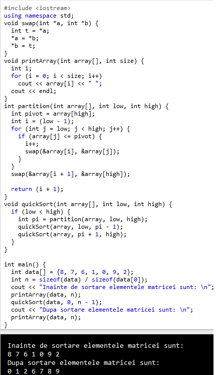
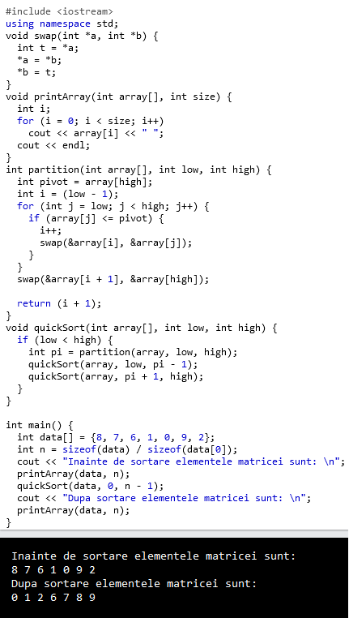
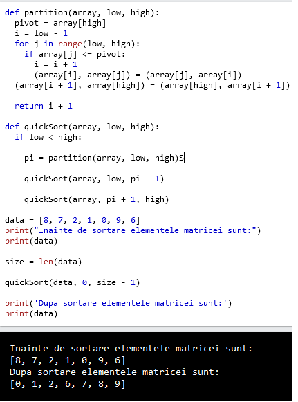
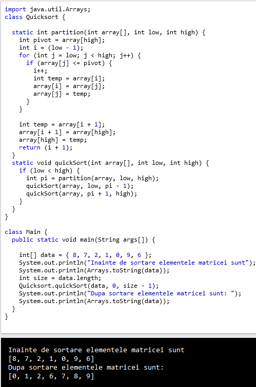

Scrieti un program pentru a implementa Quicksort în limbajul C, C++, PYTHON si JAVA.




Observatii:
in timpul pivotarii:
fiecare iteratie, doar una dintre variabilele i si j se modifica: sau creste i, sau scade j
pivotul este elementul cu indicele care nu se modifica
algoritmul descris mai sus realizeaza ordonarea crescatoare a tabloului; pentru ordonarea descrescatoarea algoritmul este asemanator: prin pivotare, elementele din stanga pivotului devin mai mari decat acesta, cele din dreapta devin mai mici;
algoritmul este cu atat mai rapid cu cat la fiecare etapa cele doua secvente delimitate de pivot au lungimi cat mai apropiate (ideal egale);
daca tabloul este de a inceput ordonat crescator sau descrescator, complexitatea algoritmului devine patratica – O(n2);
anumite metode de alegere a pivotului pot sa evite aceasta situatie